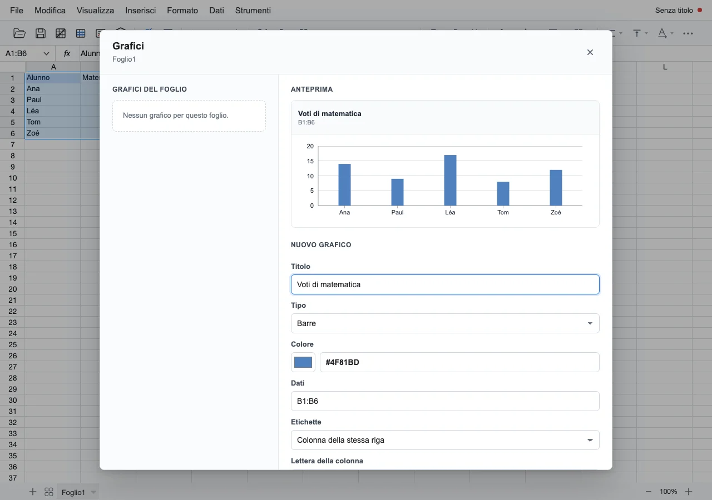
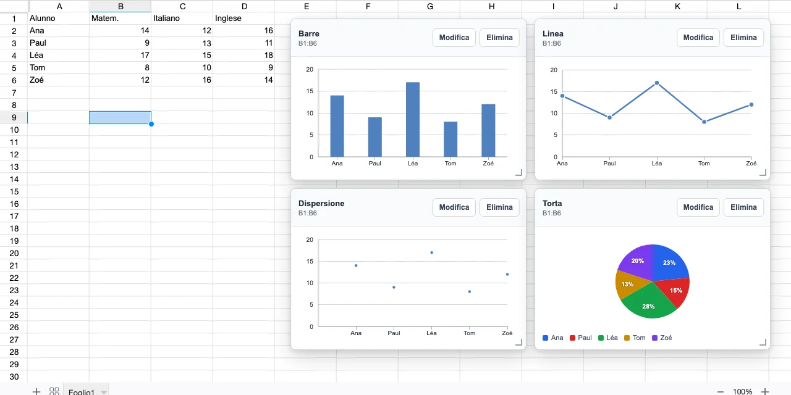
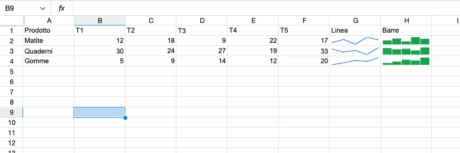

Grafici e sparkline
Creare un grafico
- Selezionare i dati.
- o Inserisci › Inserisci grafico.
- Scegliere il tipo e le opzioni; l’anteprima segue.
- Aggiungi, poi Chiudi.

| Selezione | Interpretazione |
|---|---|
| una colonna o una riga di numeri | i dati |
| due colonne | etichette nella prima, dati nella seconda |
| due righe | etichette nella prima, dati nella seconda |
| due colonne separate, scelte con Ctrl | lo stesso |
Un grafico mostra una serie: una riga o una colonna di dati. Le celle senza numero, come un’intestazione, sono ignorate.
Tipi
| Tipo | Per | Etichette |
|---|---|---|
| Barre | confrontare | sotto le barre |
| Linea | un andamento | in ascissa |
| Dispersione | una relazione tra due grandezze | sono le ascisse, se sono numeri; altrimenti 1, 2, 3… |
| Torta | parti; valori positivi | nella legenda o sugli spicchi |
Fino a 120 valori, 24 per la torta.

Opzioni
| Campo | Contenuto |
|---|---|
| Titolo | obbligatorio; mostrato in alto nel grafico |
| Colore | selettore o codice #4F81BD; gli spicchi hanno i propri colori |
| Dati | l’intervallo: B2:B6 |
| Etichette | Senza etichette; Colonna della stessa riga (A); Riga delle stesse colonne (1); Intervallo personalizzato, della stessa dimensione dei dati |
| Visualizzazione | valori, legenda, ascisse, ordinate, griglia |
Spostare, modificare
- Trascinare la fascia del titolo sposta il grafico; trascinare il suo angolo in basso a destra lo ridimensiona.
- Modifica riapre la finestra, Elimina lo elimina. La finestra elenca anche tutti i grafici del foglio.
- Il grafico segue i dati delle sue celle.
I grafici sono salvati nel file Excel come veri grafici, e riletti da DocCells. Non sono stampati con il foglio.
Sparkline
La funzione SPARKLINE disegna un grafico in miniatura nella cella.
=SPARKLINE(B2:F2)
=SPARKLINE(B2:F2; {"charttype"\"column"})
=SPARKLINE(B2:F2; {"charttype"\"line"; "color"\"#dc2626"; "linewidth"\2})
=SPARKLINE(B2:F2; {"charttype"\"bar"; "max"\100})
Le opzioni si scrivono tra parentesi graffe: il nome, una barra rovesciata, il valore; un punto e virgola tra due opzioni.
charttype | Disegno | Opzioni proprie |
|---|---|---|
"line" (predefinito) | linea | color, linewidth, xmin, xmax, ymin, ymax |
"bar" | barre impilate | max, color1, color2 |
"column" | colonne | color, negcolor, lowcolor, highcolor, firstcolor, lastcolor, axis, axiscolor, ymin, ymax |
"winloss" | vincite e perdite | le stesse, senza ymin né ymax |
Opzioni comuni: empty ("zero" o "ignore"), nan ("convert" o "ignore"), rtl (da destra a sinistra). La documentazione di SPARKLINE dà tutti i valori, con esempi.
Per un disegno più grande, ingrandire la riga e la colonna, o unire delle celle.